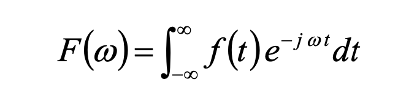
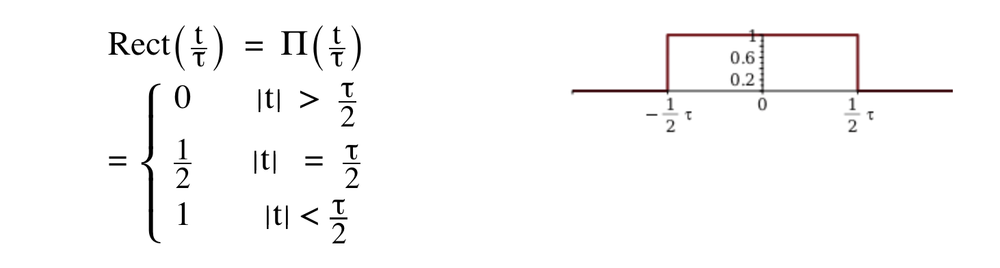
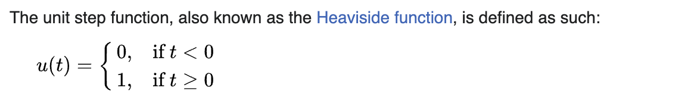

傅立叶变换之rect, sinc, delta 函数 - 课堂笔记
Contents
几个基础函数
做傅立叶相关计算题的时候遇到几个奇怪的函数,
- Unit Impulse function (Delta function)
- Unit Step function
u(t),u(t-3) - rect和sinc function, 它俩是一对Fourier Transform Pair
研究这几个函数之前先看一下最基础的定义式,
求f(t)的傅立叶变换:

求傅立叶逆变换:

另外是三角函数和欧拉函数的推导, 其实就是1式和2式相加, 得到cos,若1式和2式相减则得到sin的表示方法,

rect function
rect函数就是一个简单的分段函数, 只是图像是个矩形我们就这么称呼它而已, 没有其它特殊的东西, 如下图:
 注意, 定义式中的
注意, 定义式中的

注意上面这个定义式里a是不确定的, 也就是说这个矩形的宽度是不确定的, 但它的高度一直是1, 所以不要太纠结a是什么, 就是宽度, 给你个矩形图像, 你知道了它的宽度, a不就知道了吗, 只是个符号而已, 如下面这个定义式和上面的一个意思:

求他的傅立叶变换直接根据它的定义式的上下限进行积分, 不用想太多, 然后rect函数的傅立叶变换可以转换成sinc函数, 所以我们称rect和sinc是一对Fourier Transform Pair. 如下图, 左边的是rect的图像, 右边的是它的Fourier Transform图像也就是sinc的图像:

unit step function
函数定义式:


遵循左加右减原则, 如u(t-3), 就是原函数向右平移了三个单位, 如下图:

这个函数经常在求傅立叶变换中用到, 就是用来判断积分上下限的(其它部分为0, 只有>t的才为1, 就是截取函数的作用), 其它没有啥影响, 看下面这两题你就懂了:


unit impulse function
{% youtube gfckPQEmFHA?t=835 %}
{% youtube lyraqtMWtGk %}
{% youtube xxGcI9WVoCY%}
下面是视频的链接:
为什么cos的傅立叶变换是delta函数
{% youtube McITNfo3LKc %}
The fourier transform is a frequency representation of a function. A cos wave has one frequency only, hence the delta finction. https://www.reddit.com/r/askmath/comments/wsk5ml/how_does_the_fourier_transformation_of_cosx_go_to/
Author David
LastMod 2023-05-06